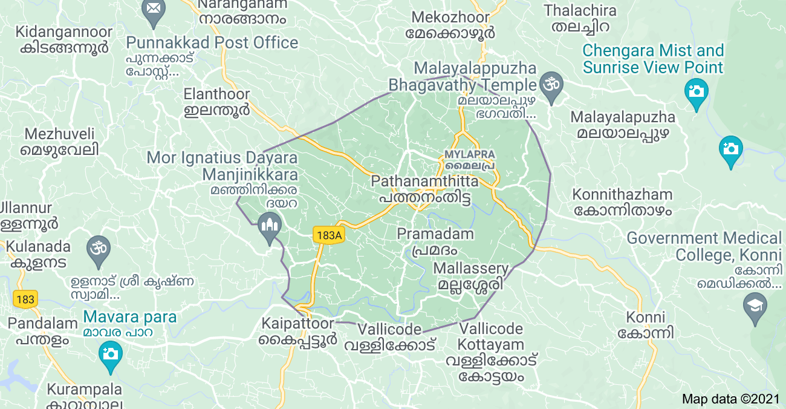

About Pathanamthitta:-
A hilly province of pristine splendour, the district of Pathanamthitta is hailed as the headquarters of pilgrim worship in Kerala. Three rivers course through its prosperous terrains comprising natural divisions of the lowlands, the midlands and the highlands. Interspersed with temples, rivers, mountain ranges and coconut groves, more than fifty per cent of the total area of this region is covered by forests. Pathanamthitta has been dubbed a Heritage Village as it attracts visitors from all over the world for its spectacular water fiestas, religious shrines and cultural training centres. Pathanamthitta is also home to the unique AranmulaKannadi - metal mirrors that are meticulously handcrafted and the VasthuVidyaGurukulam, a village which practices the ancient Indian school of architecture.
Konni and Adavi
A hill town, Konni is famous for timber trade and wild elephant training centre. This is a charming town with lush meadows and hills stands on the bank of river Achakovil. It is surrounded by clove and pepper plantations. Elephants trapped from the forest area are also tamed here. Konni with a vast expanse of lush green forests is the eco-tourism hub of Pathanamthitta district, which has a project with elephants at its nerve centre. An elephant kraal (shelter), a photo gallery, modern elephant shelters, an elephant museum, shops to sell forest produce, a children’s park, a biogas plant and a paper-making unit are part of the project, offering vivid experiences to the visitors.

Gavi
Gavi is an Eco-Tourism a project of the Kerala Forest Development Corporation located in Pathanamthitta district, Kerala. Gavi, located in Pathanamthitta district offers its visitors activities like trekking, wildlife watching, outdoor camping in specially built tents, and night safaris. Distance from Pathanamthitta To Gavi is 109 km 428 mtrs & Travel Time is 2 hour 5 mins By Road. Gavi is 14 km south west of Vandiperiyar, 28 km from Kumily, near Thekkady. Gavi is inside the Ranni reserve forest. Gavi is a part of Seethathode Panchayath in Ranni Taluk. Gavi is part of the Periyar Tiger Reserve, and the route can be covered by car from Vandiperiyar. The entrance fee is 25 rupees per person and 50 rupees per vehicle. Cameras are 25 rupees and video cameras are charged 100 rupees. Both day and night stays are available. Forest tent camping is available from November through March.[citation needed]. It has been said that most enjoyable route to Gavi is the way from Pathanamthitta. The rough journey to Gavi may better be made on a sturdy vehicle like a jeep. Entry passes must be obtained from the Forest Check Post en route at Vallakkadavu. Advance booking with the Kerala Forest Development Corporation Ltd. is highly appreciable wherein such formalities will be taken care of by the company itself.